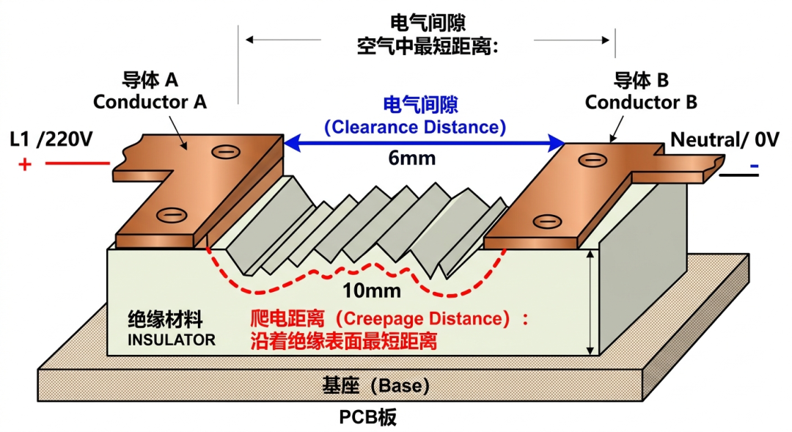

遇到高海拔场景时，基本都会确认下设备是否需要高海拔降额。
看起来简单，背后却不只是功率打折那么简单。
最容易想到的是散热。海拔越高，空气越稀，风冷、自然冷却、对流换热都会变差。PCS 里的功率器件、磁性器件、母排、接线端子，甚至变压器和箱内低压元件，温升都会变得更难压住，所以厂家往往要做降额曲线。
但高海拔同样影响的还有绝缘。
因为空气除了能带走热量，它本身还是绝缘介质。
而海拔一高，空气密度下降，空气的介电强度也会下降，原来在平原上没问题的电气间距，到了高海拔地区，绝缘裕度可能就不够了。
所以高海拔往往导致散热能力下降和空气绝缘能力下降。
因此电气设计里两个看起来很基础、但实际上非常核心的概念，今天这篇文章聊聊清楚：什么是电气间隙？什么是爬电距离？
【电气间隙是什么？】
先说电气间隙，也就是Clearance。
它的本质是两个不同电位的导电部件之间，沿空气中最短的距离。
可以理解成中间隔着一段空气的直线距离。
空气本来是绝缘的，但它不是无限可靠的。只要电场足够强、间距足够小，空气也会被击穿，于是就可能发生放电、闪络，严重时甚至拉弧。
所以，电气间隙就是在问一个问题：这两点之间的空气距离，够不够扛住工作电压、冲击电压和环境条件？
海拔越高，空气越稀，空气越容易被击穿，所以clearance 通常就要增大。
这也是为什么很多低压电器、变频器、开关柜、功率模块，一旦用在高海拔地区，就不能简单照搬平原上的布置尺寸。

*【爬电距离是什么？】*
再说爬电距离（Creepage Distance）。
它是：沿绝缘材料表面，两个不同电位之间最短的爬行路径有多长。
很多时候，放电不一定是直接穿过空气，也可能沿着绝缘件表面“爬过去”。尤其在有灰尘、潮气、盐雾、凝露、污染沉积的环境里，绝缘表面会慢慢变得不那么绝缘，漏电流增加，表面碳化、跟踪、放电都会变得更容易。
用一个形象的比喻：两座山。电气间隙看的是鸟飞过去要飞多远；爬电距离看的是蚂蚁沿着山坡和地表绕过去要走多远。
两者看的是同一件事——防止绝缘失效。
但一个防的是空气击穿，一个防的是表面爬电和跟踪放电。

*【为什么储能系统到了 3000m 以上要特别谨慎？】*
很多人问：储能舱在 3000m 以上能不能用？
一般来说：标准版方案一般不能默认直接用，必须做高海拔适应性评估。
因为高海拔影响的不是一个零件，而是一整串设备：
1）PCS 先受影响
PCS 里有大量依赖空气散热和空气绝缘的部位。海拔升高后，功率器件散热能力下降，同时内部电气间隙的绝缘裕度也在下降，所以 PCS 往往最先出现高海拔降额要求。
2）变压器、开关柜、断路器也受影响
这些设备同样依赖空气绝缘和对流散热。所以在高海拔地区，不只是 PCS 要重新看，变压器、开关柜、断路器、接触器、熔断器这些器件的适用海拔范围也都要核查。
3）电池舱本体并不是完全没事
很多人会觉得电芯封装在里面，海拔对它没那么大影响。这个想法有一部分道理，但电池舱不是只有电芯。里面还有：
-
高压盒
-
连接器
-
熔断器
-
接触器
-
采样线束
-
绝缘支撑件
-
舱内辅助配电系统
-
空调或液冷系统
-
消防及探测系统
这些部件里，只要有一部分对海拔敏感，整个系统边界就要重新确认。

*【从项目角度看，高海拔储能到底该怎么判断？】*
如果是工程项目，*高海拔储能项目*应该拆成下面几个问题：
第一，看设备标准海拔边界
厂家资料写的是 2000m、3000m，还是更高？超过边界后，是禁止使用，还是允许降额，还是需要定制？
第二，看谁最先成为短板
很多时候先顶不住的并不是电池，而是：
-
PCS
-
变压器
-
开关柜
-
接触器 / 断路器
-
HVAC
-
舱内辅助配电系统
第三，看是否需要做高海拔绝缘校核
这里面就要把电气间隙和爬电距离真正拿出来看
第四，看环境是不是叠加恶化
高海拔如果再叠加风沙、凝露、盐雾、低温、昼夜温差大，绝缘设计压力会更明显。
所以，对一个 3000m 以上的储能项目，需要确认设备在目标海拔及环境条件下的热设计边界、绝缘配合边界，以及是否需要进行电气间隙修正、爬电距离复核和整机降额。
高海拔一定会碰到两个基础概念：
| 概念 | 看什么 | 主要防什么 | 最敏感的影响因素 | |--------------|----------|------------|-----------------------------| |电气间隙 Clearance|空气中的最短直线距离| 空气击穿、闪络、拉弧 | 海拔、冲击电压、过电压类别 | |爬电距离 Creepage |沿绝缘表面的最短路径|表面漏电、跟踪、污染闪络|污染等级、材料 CTI（相比电痕化指数）、湿度/灰尘/盐雾|
高海拔降额往往意味2个问题：热设计和绝缘设计。
而绝缘设计里，最核心的两个抓手，就是：电气间隙，和爬电距离。
锂电10分钟，聚焦锂电池、储能、电车，追踪海内外行业新闻、政策和技术趋势，欢迎关注
[完]
免责声明：本文基于公开信息、行业报道及作者个人观察整理而成，仅用于行业交流与信息分享，不构成任何投资建议、商业承诺或决策依据。文中部分观点带有一定主观判断，欢迎理性讨论与交流；如涉及企业经营、市场数据及项目进展，请以公司官方披露信息为准。如有引用疏漏或表述不当，欢迎联系更正。